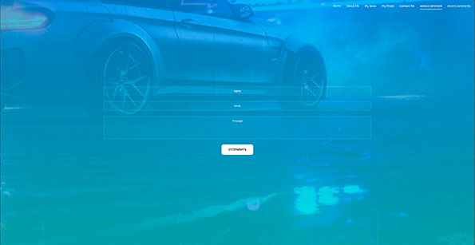
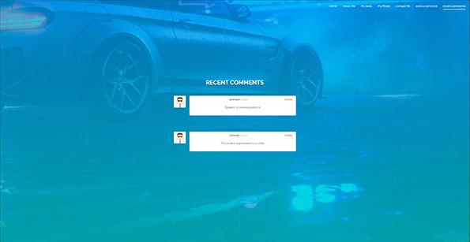
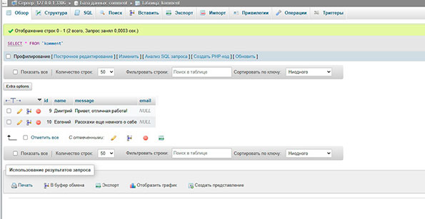

Задание №1
добавить возможность добавлять комментарии на страницу:

Задание №2
добавить возможность по управлению этими комментариями для автора:

Задание №3
добавить сохранение комментариев в файле(а) или простой базе данных (б):

Вывод:
В ходе работы была добавлена система комментирования на сайт и возможность управления комментариями. Все данные хранятся в бд phpmyadmin на localhost.